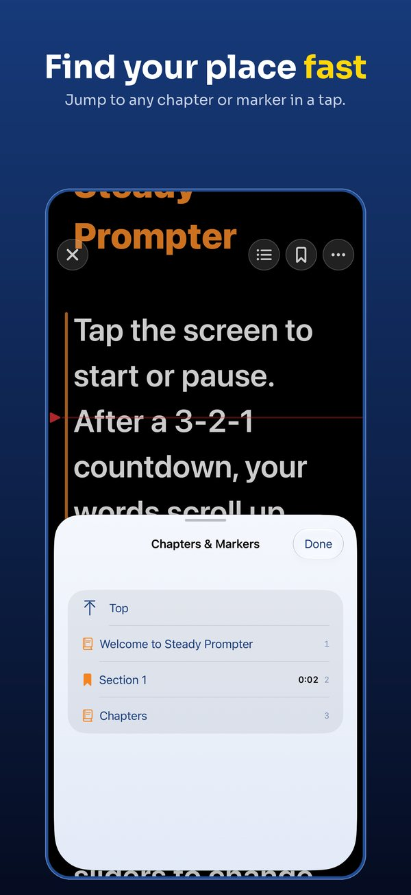
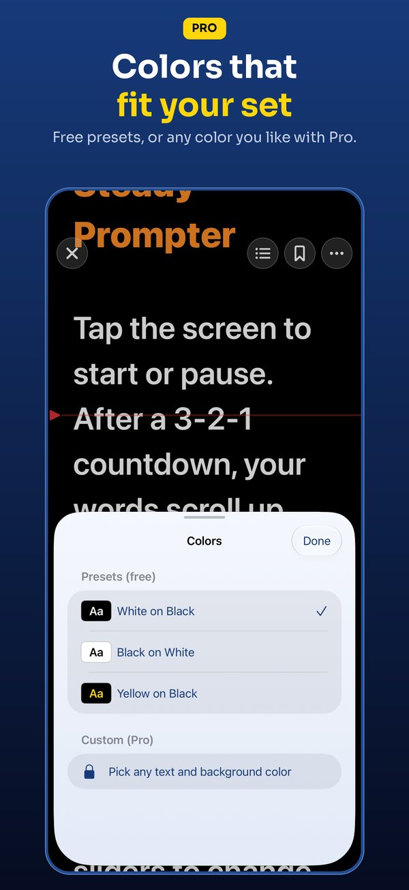
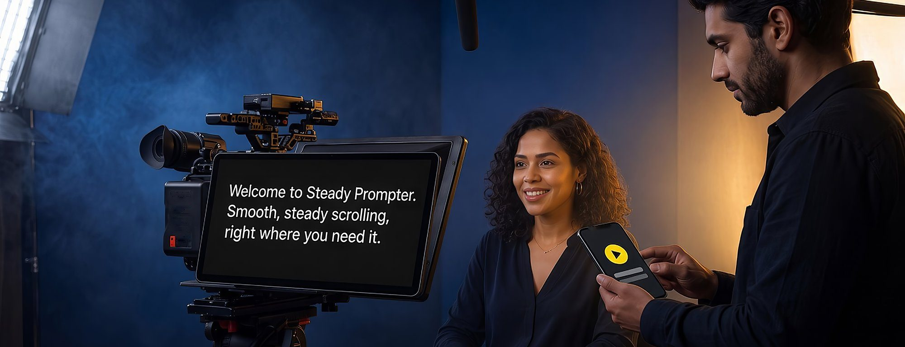
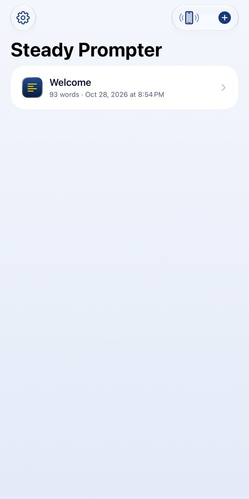
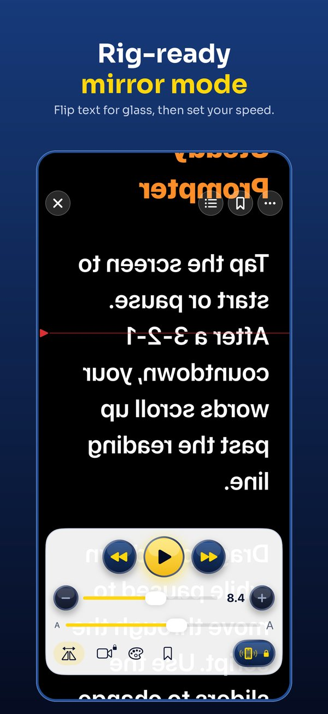
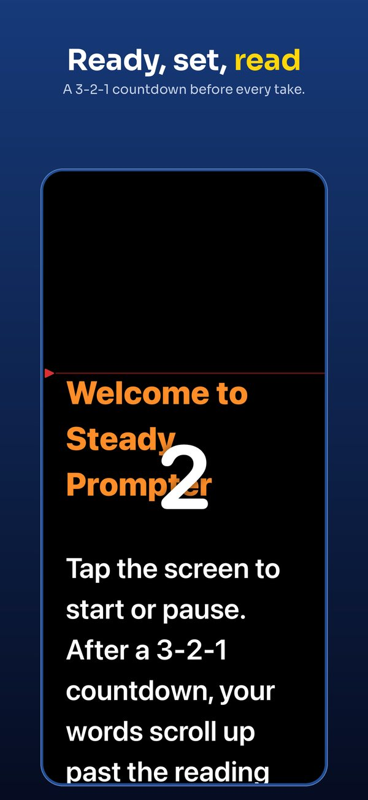

Speak to the lens,
not the page.
Load your script, press play and read at a steady pace while your eyes stay on the camera.
- Start free, with no account.
- Pro is $19.99, once. No subscription.
Free, ready to roll
- Your scripts, ready to roll. Type, paste or import text, RTF, PDF, Word or Pages files.
- A reading line that keeps your place as the script scrolls.
- Chapters. Start a line with # to make a chapter, then jump straight to it.
- Markers. Add and name markers with timecodes, then tap one to jump to it.
- Mirror mode for teleprompter glass.
- A 3-2-1 countdown before every take.
- Speed and text size controls. Tap to pause, adjust, and keep reading.
- Three color presets: White on Black, Black on White and Yellow on Black.
- No account.

Go Pro
One purchase. No subscription, no renewals.
- Run it from across the room. Pair another iPhone or iPad as your remote with a 4-digit code. Only the prompter device needs Pro.
- Record yourself while you read with the front camera. Videos save to Photos.
- Keyboard and Bluetooth clicker control.
- Custom colors for your text and background.
- Read-time estimates for every script.
Bought Pro before? Tap Restore Purchase on the paywall or in the menu at the top left of the script list.

Who it's for
- Creators and vloggers recording to camera
- Solo shooters who run the prompter from in front of the camera
- Presenters, teachers and speakers
- Podcasters who film their shows
- Video crews working with teleprompter glass
- Start free. Pro is $19.99, once.

How to use it
- Add a script. Type it, paste it or import a file.
- Shape it. Start a line with # for chapters, and add markers for key moments.
- Set it up. Pick your speed and text size, and turn on mirror mode if you're using glass.
- Press play. A 3-2-1 countdown starts, then your script scrolls past the reading line. Tap to pause.
- Go remote PRO On the prompter, tap Remote and turn on Allow Remote. On your other iPhone or iPad, tap Remote Control in the script list, pick the prompter and enter the 4-digit code. Keep both devices nearby with Wi-Fi and Bluetooth on.



The full how-to guide
Every control, the remote button by button, markers, troubleshooting and plans, in one 18-page PDF.
Tell us how it went.
Used Steady Prompter for a video, a talk or a class? A short review on the App Store helps other people find it, and helps us make it better.
Leave a reviewOnly real reviews will appear here.
Questions? We're here to help.
Email us and tell us which devices you use, what you see on screen, and add a screenshot if you can.
Can't connect the remote?
Check that Allow Remote is on, both devices are nearby with Wi-Fi and Bluetooth on, Local Network access is allowed, and both have the latest version. Then re-enter the code.
Email support How-to guide (PDF) Watch the 30-second demo All support tips